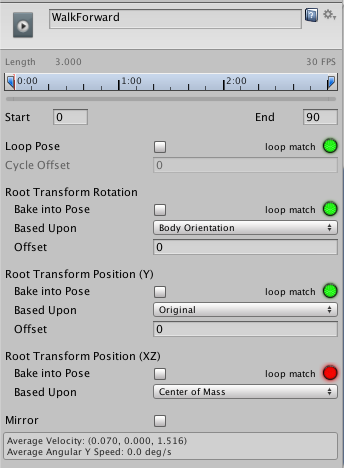

Root Motion - how it works
Body Transform
The Body Transform is the mass center of the character. It is used in Mecanim's retargeting engine and provides the most stable displacement model. The Body Orientation is an average of the lower and upper body orientation relative to the Avatar T-Pose.
The Body Transform and Orientation are stored in the Animation Clip (using the Muscle definitions set up in the Avatar). They are the only world-space curves stored in the Animation Clip. Everything else: muscle curves and IK goals (Hands and Feet) are stored relative to the body transform.
Root Transform
The Root Transform is a projection on the Y plane of the Body Transform and is computed at runtime. At every frame, a change in the Root Transform is computed. This change in transform is then applied to the Game Object to make it move.

Animation Clip Inspector
The Animation Clip Editor settings - Root Transform Rotation, Root Transform Position (Y) and Root Transform Position (XZ) - let you control the Root Transform projection from the Body Transform. Depending on these settings some parts of the Body Transform may be transferred to Root Transform. For example you can decide if you want the motion Y position to be part of the Root Motion (trajectory) or part of the pose (body transform), which is known as Baked into Pose.

Root Transform Rotation
Bake into Pose: The orientation will stay on the body transform (or Pose). The Root Orientation will be constant and delta Orientation will be identity. This means that the Game Object will not be rotated at all by that AnimationClip.
Only AnimationClips that have similar start and stop Root Orientation should use this option. You will have a Green Light in the UI telling you that an AnimationClip is a good candidate. A suitable candidate would be a straight walk or a run.
Based Upon: This lets you set the orientation of the clip. Using Body Orientation, the clip will be oriented to follow the forward vector of body. This default setting works well for most Motion Capture (Mocap) data like walks, runs, and jumps, but it will fail with motion like strafing where the motion is perpendicular to the body's forward vector. In those cases you can manually adjust the orientation using the Offset setting. Finally you have Original that will automatically add the authored offset found in the imported clip. It is usually used with Keyframed data to respect orientation that was set by the artist.
Offset: used to enter the offset when that option is chosen for Based Upon.
Root Transform Position (Y)
This uses the same concepts described in Root Transform Rotation.
Bake Into Pose: The Y component of the motion will stay on the Body Transform (Pose). The Y component of the Root Transform will be constant and Delta Root Position Y will be 0. This means that this clip won't change the Game Object Height. Again you have a Green Light telling you that a clip is a good candidate for baking Y motion into pose.
Most of the AnimationClips will enable this setting. Only clips that will change the GameObject height should have this turned off, like jump up or down.
Note: the Animator.gravityWeight is driven by Bake Into Pose position Y. When enabled, gravityWeight = 1, when disabled = 0. gravityWeight is blended for clips when transitioning between states.
Based Upon: In a similar way to Root Transform Rotation you can choose from Original or Mass Center (Body). There is also a Feet option that is very convenient for AnimationClips that change height (Bake Into Pose disabled). When using Feet the Root Transform Position Y will match the lowest foot Y for all frames. Thus the blending point always remains around the feet which prevents floating problem when blending or transitioning.
Offset: In a similar way to Root Transform Rotation, you can manually adjust the AnimationClip height using the Offset setting.
Root Transform Position (XZ)
Again, this uses same concepts described in Root Transform Rotation and Root Motion Position (Y).
Bake Into Pose will usually be used for "Idles" where you want to force the delta Position (XZ) to be 0. It will stop the accumulation of small deltas drifting after many evaluations. It can also be used for a Keyframed clip with Based Upon Original to force an authored position that was set by the artist.
Loop Pose
Loop Pose (like Pose Blending in Blend Trees or Transitions) happens in the referential of Root Transform. Once the Root Transform is computed, the Pose becomes relative to it. The relative Pose difference between Start and Stop frame is computed and distributed over the range of the clip from 0-100%.
Generic Root Motion and Loop Pose
This works in essentially the same as Humanoid Root Motion, but instead of using the Body Transform to compute/project a Root Transform, the transform set in Root Node is used. The Pose (all the bones which transform below the Root Motion bone) is made relative to the Root Transform.